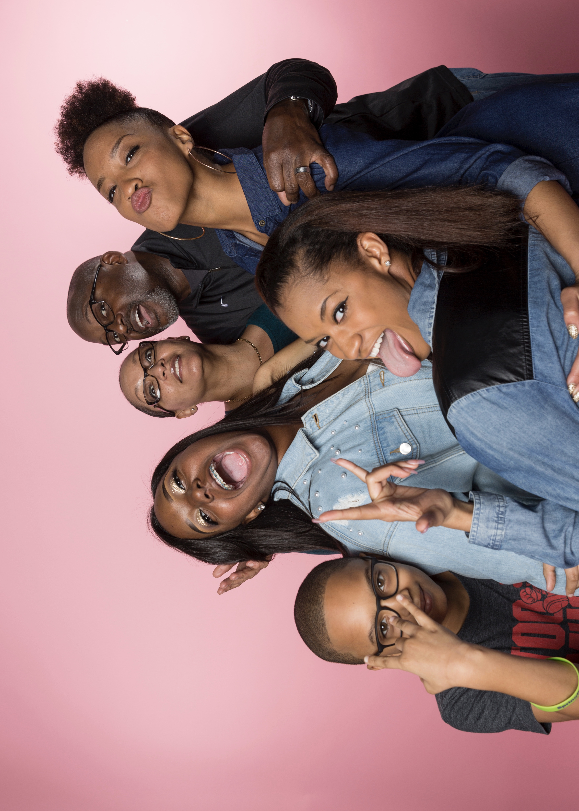

 | Jordyn's family consist of seven individuals. Her parents, Kelly and Wendell Johnson, have been togther for twenty years. Tigther they have four children including Jordyn. Jasmine, who is 22 years old, is the oldest and is a school teacher for KIP academy. Jada, who is 16 years old, is the youngest girl and attends Salem High School. Joesph, 11 years old, is the youngest and only boy in the family. he attends Flat Shoals Elementary. jordyn has a one year old daughter as well, Riley Johnson. |